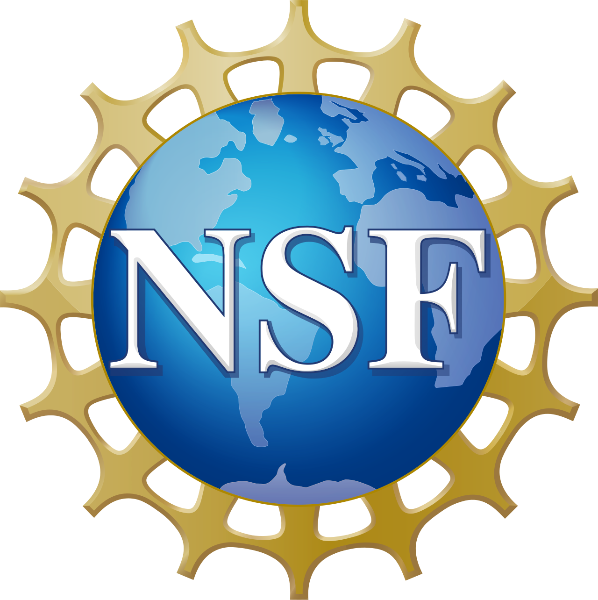

Robert Noyce Teacher Scholarship Program Track 3 at the University of New Mexico
The NSF-supported New Mexico TODOS initiative strengthens STEM teacher preparation and professional learning through collaboration across the University of New Mexico and educational communities. Related AI literacy efforts focus on helping educators develop informed, responsible approaches to AI in STEM teaching and learning, while supporting equitable educational opportunities in New Mexico.
Project image / artifact to be added
Project Team
Research Funding & Support

Funding source: National Science Foundation (NSF)
Institution: National Science Foundation
Role: Co-Principal Investigator (PI: Deena Gould)
Award amount: $127,387 supplemental award
Project period: September 2026–August 2027
Award number: 2243359